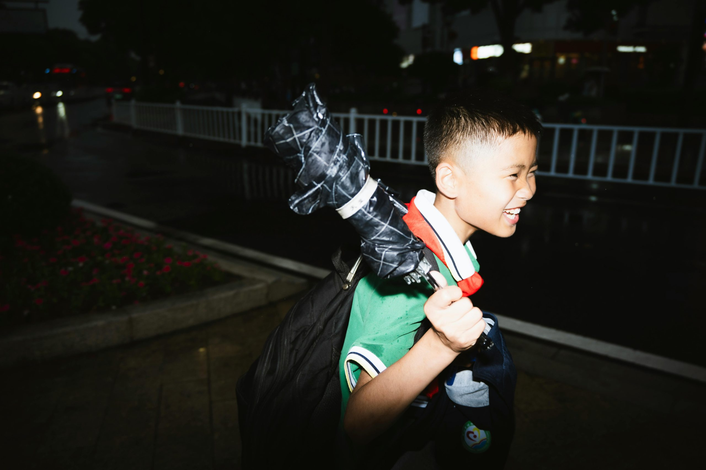

第一次聽到「包養網」，難免會有點好奇加帶點懷疑。甜心文化在近年滿熱門，也愈來愈多人討論包養，想知道到底是怎麼一回事。我自己就是抱著開放心態，想實際體驗 Primesugar 這類包養網，看看甜心文化背後到底藏著什麼樣的真實互動和感受。
這篇文章純粹是我親身的使用心得，內容不會硬推，也沒什麼過度美化。希望讓對包養文化感到新奇或真心有興趣的人，能一窺我的經驗，放心了解這個看似神秘的社交圈。
Primesugar 包養網簡介與註冊流程
很多人對包養網感到好奇，但不知道怎麼開始，註冊流程安不安全、會不會很麻煩。其實 Primesugar 的註冊和使用都算是直覺，整體介面讓人感覺很新穎，沒有苛刻的流程或複雜的設計。這裡的會員組成也相對多樣，無論是「甜心」還是找包養的朋友，都很直接、明確。以下我整理了平台特色、常見功能，以及註冊時要注意的細節。
平台特色與主要功能
Primesugar 的設計特點很明顯，整體色系乾淨、手機操作也順暢。這類包養網跟一般交友網最大的不同，就是強調彼此條件的透明與潔淨：
- 資料展示全面：每個人都有詳細自我介紹、照片、生活興趣。你想找哪種關係、想認識哪種「甜心」，都能直接篩選。
- 條件篩選功能：可以依照年齡、地區、職業、興趣做多種組合搜尋，很快找到目標人選。
- 安全保密措施：平台不會輕易外洩資訊，對身份都做一定程度審核，有報表檢舉、封鎖等措施。
- 互動與溝通工具：有私訊、讚、快速邀約等功能，適合不同性格的用戶互動。
- 體驗設計友善：沒有繁瑣的廣告或強制性推銷，整個過程很安靜，也保有大家私人的選擇空間。
整體來說，Primesugar 給人的感覺不做作，該有的包養元素都有，操作體驗簡單不煩瑣。
註冊流程詳細介紹
如果你想嘗試 Primesugar，其實註冊不會讓人有壓力。基本上流程如下：
- 選擇註冊身份
一進去就會問你「甜心」還是找包養對象。這一步很直接，畢竟彼此想法不同。 - 填寫基本資料
包含暱稱、年齡、性別、所在地。千萬別用真名，以保障個人隱私。 - 照片上傳
平台鼓勵上傳清晰、得體的照片。不一定要見光死那種正臉照，但風格和真誠度會直接影響互動率。 - 自我介紹
這是很多人會偷懶的地方，但其實寫得用心一點，比一堆空白帳號有溫度多了。 - 條件設定
根據個人需求設定篩選條件，例如期望的包養金額、互動類型、見面時間等。 - 驗證碼與信箱驗證
填完資料後，通常會收到一封驗證信，只要點進去認證就完成。
資料填寫注意事項
在註冊時，除了按步驟填寫，還有一些實用小細節值得提醒：
- 避免個資外洩：不要輕易填真名、手機號、工作單位，有必要再透過平台慢慢建立信任。
- 照片能加分：不需修圖過頭，自然一點反而感覺更誠實。
- 金額設定要理性：平台不會像拍賣一樣亂喊價，要根據自己現實情況設立條件，保持尊重很重要。
- 介紹不用太浮誇：真實描述個性、興趣，比空洞的口號或自吹自擂還有效。
- 持續登入更容易被發現：新註冊帳號要勤勞一點，不然很快就被海量會員淹沒。
整體來說，Primesugar 包養網在註冊和資料設定上都沒太多彎彎繞，很適合想試試包養或好奇甜心文化的新手入門。
建立個人檔案與尋找甜心過程
想在包養網如 Primesugar 上遇到對的人，第一步就是打造能吸引目標對象的個人檔案。無論你屬於哪一方，良好的照片和真誠的自我介紹都是關鍵。過程中，從配對、互動到第一次見面，每一環節都有小細節要注意，才能讓包養經驗變得自然有趣，也更讓人安心。
與甜心配對的經驗: 描述配對流程順暢度、配對訊息的提醒機制，以及平台如何保障雙方隱私
在 Primesugar 建立個人檔案後，馬上就能感受到配對系統的效率。介面設計讓人容易瀏覽，重點資訊一目了然。只要設定好條件，系統會推薦適合的甜心，過程中沒有繁瑣操作，滑幾下就可以發現合眼緣的人選。配對時有以下亮點：
- 即時配對提醒：只要對方也點了「喜歡」或發送訊息，我都會收到APP或Email即時提醒。這樣一來，不怕會錯過任何與甜心互動的機會。
- 雙方隱私保護強：每次聯絡只通過平台系統傳訊息，彼此身份和聯絡方式都受到嚴格保護。只有你主動分享時，對方才知道詳細資料，降低資訊外流風險。
建立一個吸引人的檔案時，建議：
- 用清晰的半身或生活照，背景乾淨、表情自然，稍微打點但不必刻意。像是在戶外、寵物或興趣場所的照片，就很加分。
- 自我介紹時，提到興趣、性格和簡單想法，口吻自然不做作比什麼都重要。舉個例子：這裡有些參考範例，能讓人瞬間了解你是哪一型。
互動及第一次見面: 談談聊天互動的氛圍、要注意什麼細節。實際見面時的準備和感受
配對成功後，互動就是突破心防的第一步。我很喜歡 Primesugar 的訊息功能，沒有太多花俏設計，反而讓對話進行起來更專注真誠。開始互動時，可以這樣做：
- 開場白不必太制式，像「哈囉，你的照片好有生活感」這種親切的問候最自然。
- 可以聊聊對方簡介裡提到的興趣，例如音樂、運動、閱讀，讓話題自然發展。
- 遇到對方回應慢，不用催促，尊重彼此節奏，顯得更成熟有風度。
第一次見面前，建議準備幾個小細節：
- 衣著得體：保持乾淨、簡單，根據見面的場合選合適風格。
- 熟悉地點路線：選在公開、安靜又交通方便的地方，優先保障彼此安全。
- 保持心態開放：無論結果如何，把它當作認識朋友的機會，別給自己壓力。
見面時的真實感覺往往比網路互動來得直接。雖然難免緊張，但用平常心對待，氛圍會比較輕鬆，也容易觀察到對方的真實個性。
 Photo by 虎 曼
包養文化講究雙方尊重，儘管是以條件為前提，但互動和第一次見面更像是普通交友，只是多了點直接和明確。這份自然，是平台設計和用戶心態共同營造出來的。如果需要更深入了解怎麼選擇合適的自介和照片，其實相關平台也有一些經典案例和建議，可以作為參考，提高彼此誠意與互信。
實際包養經驗與感受
聊到包養，大家最關心的莫過於真實的互動是什麼感覺。剛開始在 Primesugar 包養網認識「甜心」，說不上期待還是緊張，畢竟這不是平常的交友場合。我自己遇到的過程，真實又直接，也有不少令人會心一笑的小插曲。
和甜心約會的第一印象
第一次和甜心見面，地點選在台北市區的咖啡廳。坦白說，比起普通的約會，內心反而更像是參加一場特別的見面會。雙方一開始都有點小心，但氣氛沒想像中尷尬，很快就進入狀況。
- 對話不做作：我們談了工作、興趣、彼此對生活的看法。甜心表現很坦率，直接說想要穩定收入也想多認識朋友，這份坦率讓人放鬆。
- 界線拿捏得宜：彼此期望跟界線很清楚。她會主動提到希望相處愉快，「包養」只是彼此交換、互助，不會黏人也不亂查對方私事。
- 幽默感不少：有次聊到寵物，甜心分享她家貓咪把她包養金偷走的糗事，我笑到差點噴出咖啡。這樣的溫度，跟外界想像的「冷交易」其實差很多。
有趣、尷尬、難忘的小插曲
在包養網約會肯定遇過一些忘不了的時刻。最印象深刻的是有一次約甜心吃火鍋，店家環境太吵，我們彼此喊到喉嚨沙啞，最後尷尬笑著直接換場地。這種自然又不做作的相處，比起一般曖昧關係其實少了很多尷尬與猜測。
還有一次，她特別送我一張親手畫的小卡片，表示謝意。雖然只是小動作，但這些互動真的讓人感受到“甜心包養”可以很溫暖，不全是外界認定的物質至上。如果你想看更多人分享的包養經驗，可以參考小茉的包養平台經歷，裡面有很多不同人的故事和細節。
彼此期望與界線的設定
剛開始會有些試探，但我們早早說開了，彼此都不喜歡過多干涉。像我喜歡報備行程，她則希望保持個人空間。我們會定時見面、互相發訊息，但彼此非常尊重。每次約會前，她會先問想去哪裡、預算範圍，不會讓人有壓力也不亂開條件。
總結下來，Primesugar 上的甜心多半都挺理性，大家都想把相處弄得舒服自在。有些經驗談提到包養文化背後的真實運作，不少甜心對界線的堅持和互助的默契其實比大家想像得多。
- 界線明確，心態健康：不會混淆金錢與情感，也不怕開口討論條件。
- 尊重隱私，保持彈性：誰也不希望對方管東管西，相處起來反而像朋友加上一層契約。
- 互相信任，誠實以對：有話直說，不會忍耐不滿，讓彼此都很輕鬆。
實際體驗下來，包養網和甜心的相處不僅僅是利益交換，更多的是一種誠信和共識。跟一般友情或愛情有點不一樣，但認真經營一樣會收穫意想不到的暖心時刻。
安全性、隱私與費用
在開始使用 Primesugar 包養網之前，我最在意的無非就是「會不會個資外洩」、「被詐騙怎麼辦」以及「到底要花多少錢」。其實，絕大多數新手都和我一樣擔心過這些事。用起這平台後，我有了更實在的體會，也得出幾個值得分享的重點，無論你是找甜心還是單純好奇包養文化，都很適合先了解這部分。
平台安全機制與用戶信任
Photo by Lucas Andrade
Primesugar 強調用戶安全是真的做得到位。簡單列舉幾個細節：
- 會員身分審核嚴格：註冊時都必須經過信箱、手機認證，甚至部分功能要通過真人審查。
- 資料私密保護：個人聯絡方式和細節都被隱藏。只有你主動分享的時候，對方才會知道。這比一般交友網更重視隱私。
- 舉報與封鎖機制：遇到不舒服或可疑用戶，隨時可以一鍵封鎖或檢舉。平台有專人審查後續，如果發現違規，會直接凍結帳號。
- 訊息全加密：所有平台內的對話都不會被第三方看見，降低詐騙風險。
這種安全設計不會把人困在冷冰冰的系統，反而打造一種「我可以放膽交朋友」的感覺。如果你也在意資訊外流，可以多參考類似包養平台的隱私保護經驗分享。
用戶隱私感受與安心體驗
用過 Primesugar 之後，我發現隱私不是只看規則，還看整體互動氣氛。實際使用時，這些細節讓我印象深刻：
- 個人檔案不強求全公開：自己的照片、介紹可以選擇僅給配對過的人看，降低被亂搜的風險。
- 主動選擇分享訊息：沒有人會一直逼你交出更多個資，節奏就像認識新朋友一樣，安全感很高。
- 聊天內容無壓力：不想回答的問題，直接跳過也沒人多問，每次互動都很自在。
這些細緻設計，其實就是平台在保障我們的空間，不僅靠技術，更靠社群氛圍。和其他網路交友相比，這種包養網的隱私保護水準讓人比較敢主動認識甜心朋友。
收費方式與實際花費
說到費用，包養網沒有你想像的「天價」。Primesugar 的收費規則大致分為「會員費」和「互動費」。這部分一定要先搞懂，避免開通後才發現不合適。
- 會員費用：
- 一般採月費制，有分單月、三個月、半年等不同方案，長期用更划算。
- 男性用戶通常需要付費才能查看及傳送訊息，女性甜心則大多可免費註冊和互動。
- 互動服務費：
- 部分彩蛋功能（突顯檔案、推薦給熱門對象）則需額外購買點數。
- 見面與包養花費：
- 實際與甜心約會或互動時，雙方討論的「包養金額」才是最大支出。根據聊天、地區、彼此條件，行情從幾千到幾萬都有。
- 我個人遇過的甜心，多半希望穩定每月固定支持，也有的偏好一次見面一次給付，彈性很大。
總體來說，如果只想先認識朋友，基本會員費就夠用。但如果真心要體驗包養，記得把月費與「和甜心協商的包養費」一起算進去。
費用透明與平台公平性
Primesugar 平台有明確的收費頁面，基本上不會發生亂收費或隱藏條款。所有費用、升級、功能都可以事前查詢，這點值得肯定。
- 無強制自動扣款：每期到期前會提醒，自己選擇是否續訂，很人性化。
- 價格公開：無論月費或點數，都開誠布公，不怕你比較。遇到疑慮，官方客服回覆很快。
如果還想多了解不同包養平台的收費方式和行情，PTT與論壇都有不少經驗文可以比對，建議出手前先參考一下。
總結重點：
- 平台在保護用戶隱私和安全下了不少功夫。
- 收費規則清楚，花多少錢心裡有底。
- 包養費用彈性，遇到合適的甜心，不怕當冤大頭。
看懂這些細節，就更能放鬆去認識每一個人，享受包養網的小驚喜和真實互動。
優缺點總結及建議對象
這一段來聊聊我用 Primesugar 包養網後，自己感受到的優缺點有哪些，也會直接跟其他平台做點小比較，幫助大家看清楚這個平台適不適合自己。有時候選平台就像買鞋，合不合腳只有自己最知道，不是所有人都適合同一種包養模式。
Primesugar 包養網的優點
用過好幾種包養網，我覺得 Primesugar 在以下幾點真的有加分：
- 介面好上手：整個流程簡單直覺，新手可以很快上手，不怕迷路。
- 會員多元、真實度高：無論「甜心」還是找包養的朋友，年齡層、職業背景都很廣；審核機制嚴格，假帳號比率明顯低，這一點很安心。
- 隱私與安全重視：訊息加密、個資不外洩，還有快速檢舉、封鎖功能。
- 功能設計人性：私人訊息、篩選條件多，不會強行推廣或亂彈窗，整體體驗清爽。
- 費用透明：會員、功能、包養金額一目了然，不用擔心突然冒出什麼隱藏收費。
Primesugar 包養網的缺點
當然，再棒的平台也不可能十全十美，用下來還是有些小缺點：
- 男會員競爭高：優質「甜心」多，但主動的男會員更多，同類型帳號會出現搶曝光現象，偶有「已讀不回」。
- 女生帳號略多新手：有些甜心其實剛加入，看得出來經驗較少，互動會有點生疏。
- 包養條件彈性高但需協商：金額範圍很廣，但雙方都必須願意溝通，前期會有些磨合。
- 小眾功能需額外付費：例如推薦曝光、精選排序這類強化功能，要多買點數，這部分老實說有點貴。
與其他包養網的不同
我覺得 Primesugar 最大不同，是強調「安全、透明、舒適」這三個元素。其他老牌包養網，有的重視高端會員圈層，有的主打即時配對，但 Primesugar 較偏向自然交流，沒有讓你有太強烈的商業感。
- 審核制度比市面平均更嚴格，減少詐騙機率。
- 界面與互動體驗較親民，不會一開始就讓人有壓力。
- 功能設計乾淨，少推播廣告，不像部分同業廣告干擾很重。
同時，Primesugar 在協商空間大，較適合喜歡彈性溝通、不想被強制規則限制的人。
適合與不適合的人
這平台並非適合所有人，用前務必想清楚自己的動機和期待：
適合的人：
- 想嘗試甜心文化、但不喜歡被商業化濃厚平台壓迫的新手。
- 重視資訊安全和真實互動的人。
- 能主動溝通、願意耐心協商包養條件的人。
- 偏好自然、樸實的訊息往來，不想一開始就談錢或硬性條件。
不適合的人：
- 期待一步到位、三分鐘就能成交包養條件的急性子。
- 成年約會老手，喜歡快速換人，或希望「條件先決」的人。
- 對費用極度敏感、預算有限，或不想額外花點數買功能的用戶。
- 不願花心思經營檔案或只想當縮水版 Tinder 交友的朋友。
如果你還會猶豫，不妨先多爬文，例如在PTT感情板就有不少真人經驗分享，把看到的故事和自己的情況做個比對，會比較有感。
總之，Primesugar 不是最炫也不是最老字號的包養網，但它乾淨、直接、真實，適合想體驗甜心文化的普通人。追求心安，也追求一點點生活新鮮感，這裡或許會有意想不到的小確幸。
結論
親自用過 Primesugar 包養網，最真實的體會就是每段互動都靠坦白、清楚的溝通堆疊出來。不論想深入了解甜心文化還是單純好奇包養，只要目標明確、界線清楚，其實能享受到很自在的社交氛圍。評估自己需求、想到自己在意什麼，這樣才能用得安心又不會失望。
我自己的經驗告訴我，選擇包養網平台時別急，多比對、多觀察，再決定是否踏入。每個人對包養和甜心的認知都不同，只要選擇適合自己的步調，這趟小冒險其實比想像中單純。如果你也對這個圈子感興趣，不妨主動嘗試，也歡迎在下方留言分享你的想法或故事。感謝你花時間閱讀，祝你找到最舒服的方式認識新朋友！